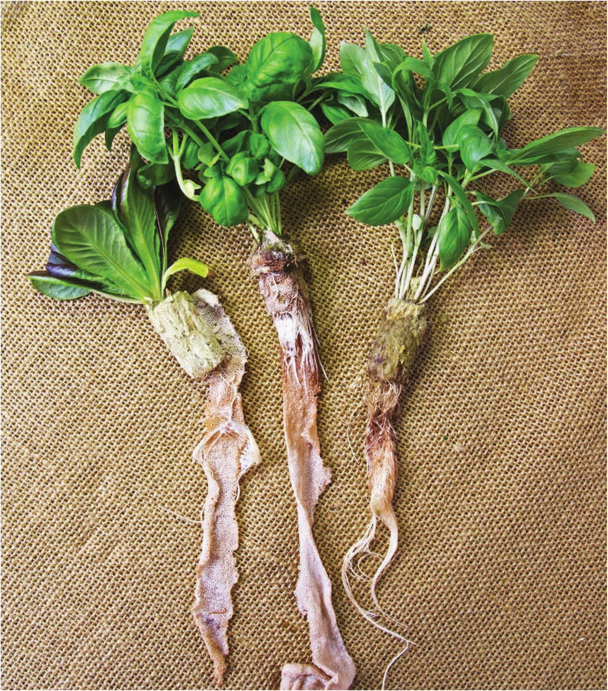

Now most of the hydroponic research is focused on these circulating systems, but there are still horticulturists experimenting with static noncirculating hydroponics. One of the most vocal proponents of noncirculating hydroponics is Dr. Bernard Kratky of the University of Hawaii. He has done so much to continue the development of noncirculating hydroponics that his name has become synonymous with the technique . . . the Kratky method. Crops The Kratky method has been successfully used to grow a wide range of crops, from leafy greens like lettuce to flowering crops like tomatoes and potatoes. Most hydroponic gardeners prefer to grow leafy greens and herbs with the Kratky method because the larger crops may struggle with inadequate oxygen levels in their root Red butterhead lettuce, Italian basil, and Thai basil grown in a hydroponic bottle garden. iit m$m rli 4'S'M : Mod 